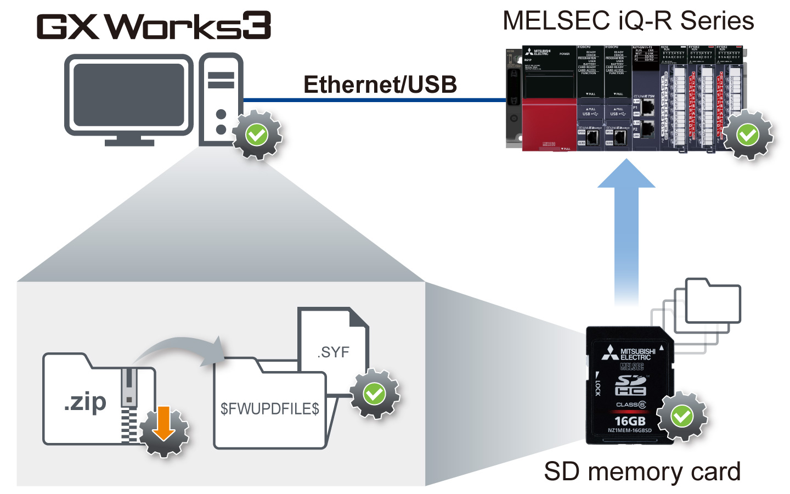
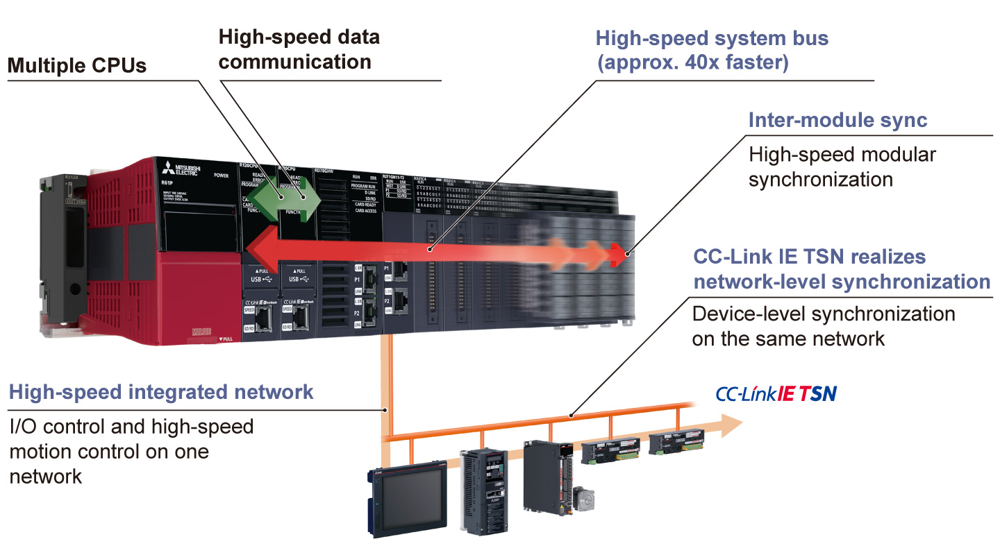
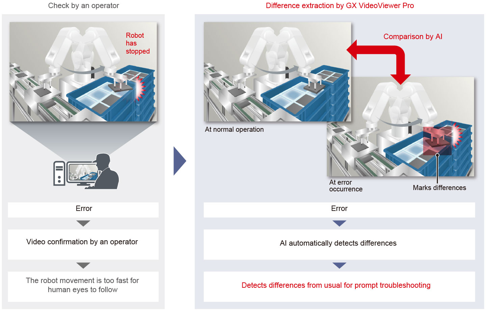
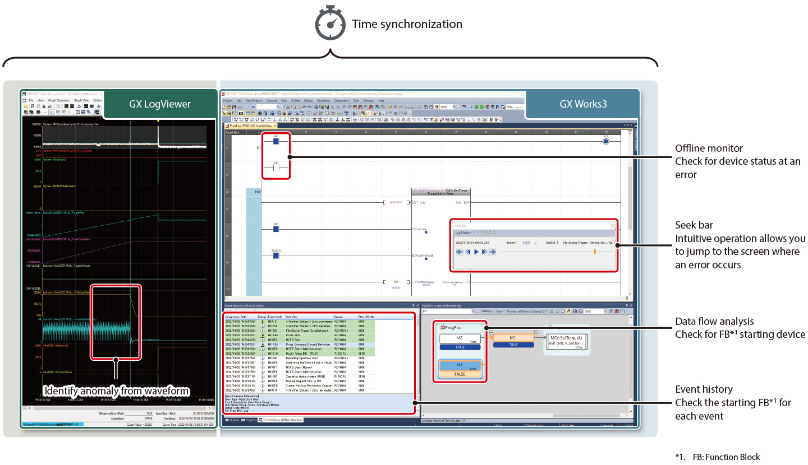
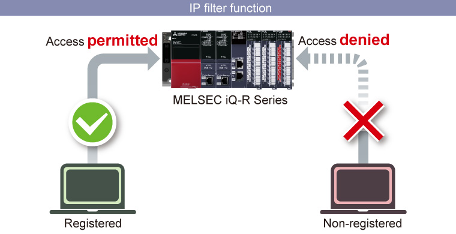

Controllers MELSEC iQ-R Series Product features -Solution-

Improve equipment performance and ability
Point1Ensuring latest functional version module
- Up to now, obtaining the latest features new module versions offered required purchasing another module. By utilizing the new module firmware update function, the MELSEC iQ-R Series current modules can be updated to newer versions enabling support of newer features without the cost of replacing the module
- Update is possible using the engineering software GX Works3 or an SD memory card

Productivity improvement
Productivity can be improved by utilizing the MELSEC iQ-R Series CPU module functions and high-speed integrated network CC-Link IE TSN.
Point2High-speed/high-accuracy processing can improve productivity
- The high-speed system bus is approx. 40-times faster compared to existing models, achieving very fast and large-capacity data processing between CPU modules or network modules
- The inter-module synchronization function allows the input or output timing of various I/O modules and advanced information modules to be synchronized with the program execution timing of CPU modules. This realizes high accuracy control of the system and equipment
- Use of the CC-Link IE TSN realizes network-level synchronization, providing node-level synchronization that ensures deterministic data flow void of any influence from data transmission delays

Troubleshooting
Mitsubishi Electric proposes enhanced maintenance solutions for prompt troubleshooting of equipment and program error. Efficient troubleshooting can minimize downtime of equipment, reducing time and cost for recovery.
Point3System recorder identifies anomaly patterns from video feeds
- In coordination with the camera recorder module and engineering software GX VideoViewer Pro, differences from normal patterns are extracted according to changes in “appearance (color, shape, position, etc.)” and “operation (amount of travel in unit time, etc.)”, then marked on the video feed automatically
- Target device and labels to be recorded can be set with extensive triggers, allowing to check the target only

Point4The system recorder allows quicker debugging of equipment
- By replaying the system-wide recording data synchronizing with a program, the error status of equipment can be checked in time-series
- A cause of unexpected operations at equipment startup can be visually analyzed, allowing prompt debugging of the equipment

Security enhancement
The risk of data breach can be lowered with functions such as security key and IP filter.
Point5Enhanced security authentication and unauthorized access blocking reduce the risk of data breach
- The CPU module can be accessed only from the computer whose IP address is registered (IP filter function)
- Programs can be locked to prevent from being opened on computers where the security key has not been registered (security key authentication function)
- Each Program Organization Unit (POU) can be locked (block password function)
- Access from non-registered devices can be blocked, thereby lowering the risk of program hacking and unauthorized tampering by a third party
